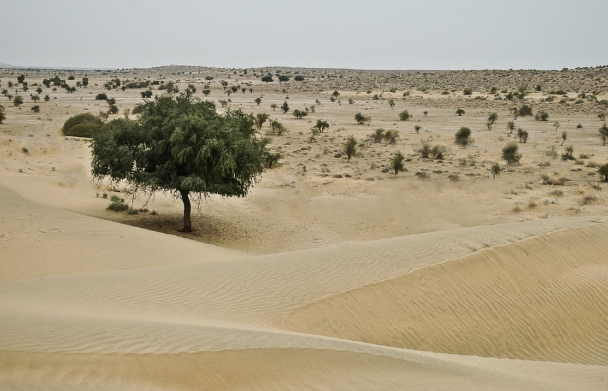

Desert vegetation
This is a type of vegetation found in desert areas. A desert is an area of land with little or no vegetation cover (Figure 4:15). The area receives very little rainfall, which causes few plants and animals to adapt and survive in such condition. Plants adapted to desert and semi-desert conditions include scrub and cactus. In Tanzania semi desert vegetation is found in the central part of the country.

(b) Planted vegetation
Planted vegetation is also known as artificial vegetation or man-made. It refers to vegetation that is entirely grown by man and does not occur naturally in the environment. Unlike natural vegetation, planted vegetation is intentionally planted or made to serve specific purposes. Different areas in Tanzania have planted vegetation for different purposes. Such areas include Mufindi, Makete, Lushoto, Rongai, Buhindi, and Njombe, where soft wood forests have been established.
Distribution of the world vegetation
Vegetation of the world is distributed according to vegetation zone. There are six main vegetation zones distributed in different parts of the world, namely: tundra or polar, temperate, desert, tropical, Mediterranean, and mountain vegetation. Areas covered with water are occupied by aquatic vegetation. Figure 4.16 show the distribution of the world’s vegetation.